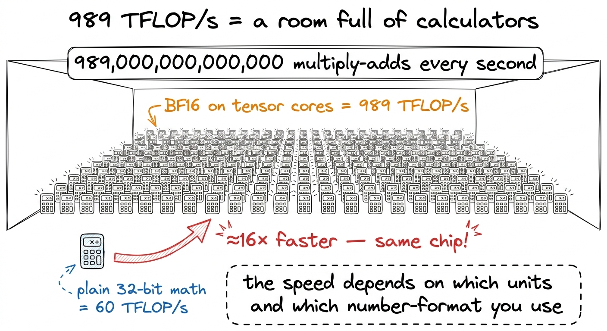
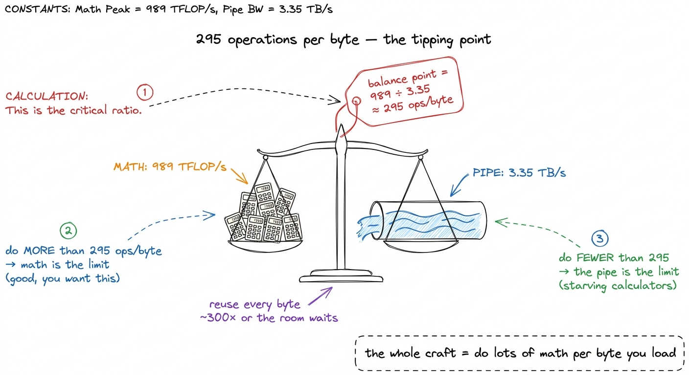
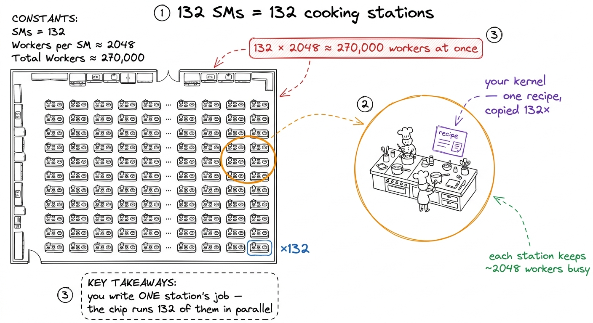
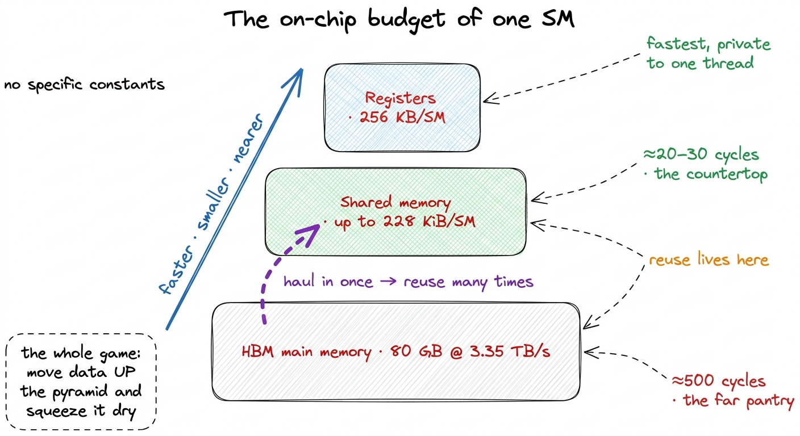
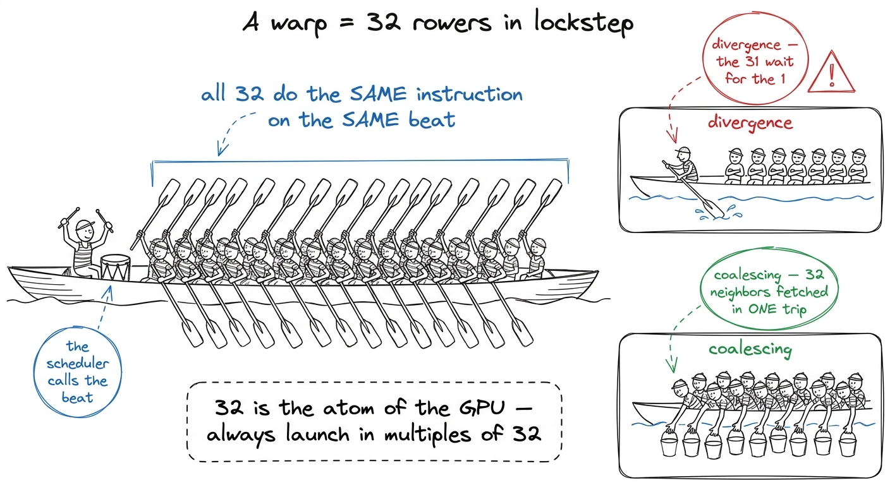
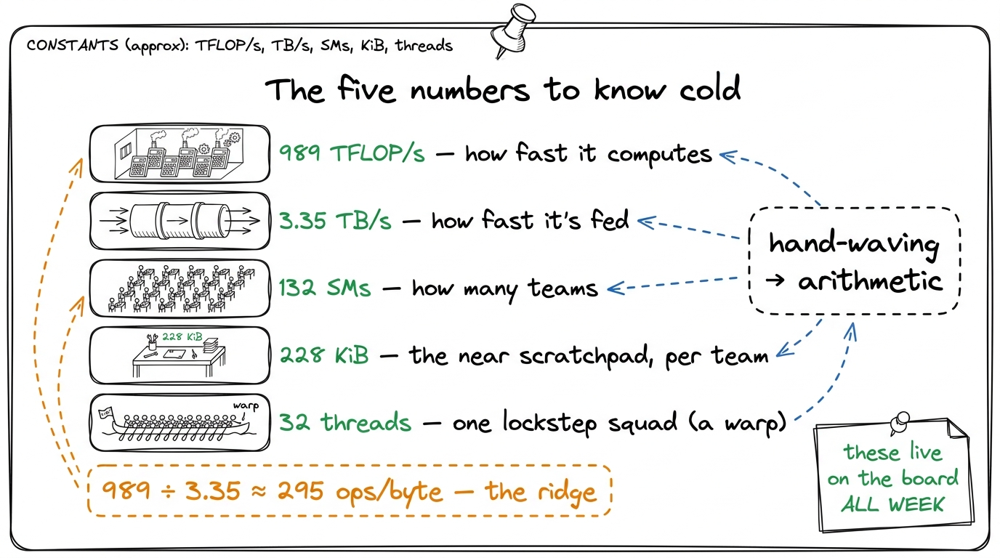

The numbers to know cold
By the end of this chapter you'll be able to stand at a whiteboard and rattle off the five numbers that describe an H100 — and, more importantly, use them to answer real questions on the spot: "will this be fast?", "why is this slow?", "how much of the chip am I wasting?" These five numbers turn vague hand-waving into confident arithmetic. Once a mentor owns them, they stop guessing and start estimating.
There are exactly five. Write them at the top corner of the board on day one and leave them there for the whole workshop. Everything you teach afterward is a story about one of these numbers.
989 TFLOP/s — how fast it can do math
3.35 TB/s — how fast it can move data
132 SMs — how many worker-teams there are
228 KiB — the on-chip scratchpad per team
32 threads — the size of one lockstep squad (a "warp")Number one: 989 TFLOP/s — the speed of the math
TFLOP/s means trillion floating-point operations per second. A "floating-point operation" is one multiply or one add on decimal numbers. So 989 TFLOP/s means the chip can do nearly a thousand trillion little multiply-and-adds every second. That is a 1 with fifteen zeros after it, per second.
Here's the catch to plant early: 989 is a special-precision number. It's the speed when the inputs are BF16 — a 16-bit "short" number format — and the work goes through the chip's matrix-multiply units (the tensor cores, next chapter). Plain 32-bit math on the ordinary cores gets only about 60 TFLOP/s. Same chip. The 989 path is roughly 16× faster than the 60 path.

figure rendering · The math ceiling drawn as a room of calculators — and the 16× gap betwNumber two: 3.35 TB/s — the speed of the plumbing
TB/s means terabytes per second — trillions of bytes moved per second. The H100's main memory (called HBM, high-bandwidth memory) can pour data into the chip at 3.35 TB/s. That's the width of the pipe feeding all those calculators.
Now put the two numbers together — that's where the magic is. The math chews 989 trillion operations per second; the pipe delivers 3.35 trillion bytes per second. Divide them:
989 TFLOP/s ÷ 3.35 TB/s ≈ 295 operations per byteThis number, ~295, is called the ridge point. It says: for every single byte you drag in from memory, you'd better do about 295 operations on it — or the calculators starve while the pipe struggles to keep up.
989 ÷ 3.35 ≈ 295. Then say what it means in plain words: "If your code does fewer than 295 sums per byte it loads, the hallway is your bottleneck and the calculators sit idle. If it does more, the calculators are the bottleneck and the hallway keeps up. 295 is the exact tipping point of this specific chip." Students will remember a number they watched you compute.
figure rendering · The two headline numbers divided into one: 295 operations per byte, thNumber three: 132 SMs — the worker-teams
The chip isn't one giant brain. It's 132 near-identical little processors bolted side by side. Each one is called a Streaming Multiprocessor, or SM. When you write GPU code, you're really describing the work for one team, and the machine copies that work across all 132 teams.
132 × 2048 ≈ 270,000. "This one chip is juggling a quarter of a million tiny workers at the same instant." Let that number sit. It's the concrete face of the word "parallel."
figure rendering · The 132 SMs as 132 identical kitchen stations, all running the one recNumber four: 228 KiB — the tiny scratchpad
Each of those 132 SMs has a small, blazing-fast scratchpad right next to its calculators. It's called shared memory, and on an H100 an SM can dedicate up to 228 KiB of it to your program. (KiB is kibibytes — 228 KiB is about 233,000 bytes.)
Why does this tiny number matter so much? Because of number two. Main memory (3.35 TB/s) is far and slow. This on-chip scratchpad is near and roughly ten times faster. The entire art of a fast kernel is: haul a chunk of data in from far memory once, park it in this scratchpad, reuse it many times before throwing it away. That reuse is how you reach the good side of the 295 ridge.

figure rendering · The memory pyramid: 228 KiB of fast near scratchpad sitting above 80 GNumber five: 32 threads — the lockstep squad
Inside an SM, workers don't act as loose individuals. They march in fixed squads of exactly 32. A squad of 32 threads is called a warp, and — this is the key fact — all 32 execute the same instruction at the same time, in perfect lockstep. Step, step, step, together.
Why know 32 cold? Two reasons. First, it's why you never launch 30 or 100 threads — you launch multiples of 32, because the hardware hands out work one full squad at a time. Ask for 40 and it runs a squad of 32 plus a squad with 24 rowers sitting idle. Second, 32 is the unit that talks to memory together: if all 32 threads read 32 neighboring addresses, the hardware fetches them in one trip down the hallway instead of 32. That trick is called coalescing, and it's one of the biggest early speedups in the whole workshop.
132 SMs × 4 squad-schedulers × 32 threads — write it out — is over 16,000 threads that can literally be stepping at the same instant, and with many squads queued up to hide waiting, the chip juggles ~270,000 in flight. "Thirty-two is the atom. Everything above it — warps, SMs, the whole GPU — is just thirty-twos stacked up." When 32 clicks, the architecture clicks.
figure rendering · The warp as a 32-oar rowing crew: same stroke together, and why neighb1 You'll hear people call a warp "SIMT" — single instruction, multiple threads. Don't put that acronym on the board in the first pass. "A squad of 32 that steps together" is the whole idea; the jargon can come later once the picture is solid.
Putting all five to work: the back-of-envelope demo
Now the payoff. Five numbers, and suddenly a mentor can answer questions instead of shrugging. Do this live.
2 × 4096³ ≈ 137 billion operations. Count the bytes it must move: about three 4096×4096 tiles of 2-byte numbers ≈ 100 million bytes. Divide: 137e9 ÷ 100e6 ≈ 1,370 operations per byte. Compare to the ridge, 295. "1,370 is way above 295 — so this matmul can be compute-bound; the chip's math is the limit, not its pipe, if we write the kernel well." You just predicted the character of a kernel with five numbers and one division. That's the whole skill.
figure rendering · The keeper: the five numbers plus the one you derive from them, drawnYou can now teach
- 989 TFLOP/s as a room full of calculators — and the 16× gap between the fast (BF16 + tensor core) path and the slow (plain 32-bit) path on the same chip.
- 3.35 TB/s as the feeding pipe, and why — despite sounding infinite — it's the bottleneck because the math is even faster.
- The ridge point, ~295 ops/byte, derived live by dividing the first two numbers, and what each side of it means for whether a kernel starves.
- 132 SMs as 132 identical cooking stations running one recipe in parallel, juggling ~270,000 workers at once.
- 228 KiB of shared memory as the tiny fast countertop, the 20-vs-500-cycle speed gap, and why reuse-in-scratchpad is the whole craft.
- 32 threads as a lockstep rowing crew (a warp) — why you launch in multiples of 32, and why 32-neighbors-in-one-trip (coalescing) is an early big win.
- The back-of-envelope demo: using all five numbers to predict, before writing code, whether a real matmul will be compute-bound or starved.